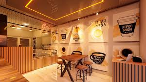

Наша історія
Ми любимо каву так само сильно, як і ви. Наша кав'ярня була створена, щоб бути вашим "третім місцем" між домом та роботою.
Кав’ярня «Аромат кави»: Мистецтво в кожній чашці «Аромат кави» — це більше, ніж просто кав'ярня. Це простір для поціновувачів якісного продукту та щирого сервісу. Ми переконані, що кава — це не просто напій, а щоденний ритуал, який заслуговує на бездоганне виконання. Чому обирають нас? Якість без компромісів. Ми ретельно відбираємо лоти кави та контролюємо кожен етап приготування. Авторське меню. Від класичного капучино до ексклюзивних сезонних напоїв, які ви знайдете тільки у нас. Свіжа випічка. Кожного ранку ми готуємо десерти, що ідеально доповнюють смак вашої кави. Завітайте до «Аромату кави», щоб відчути справжній смак якості.
Інтер`єр:
